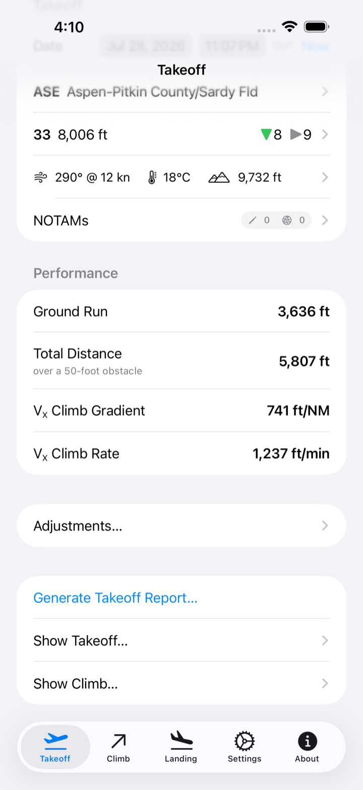
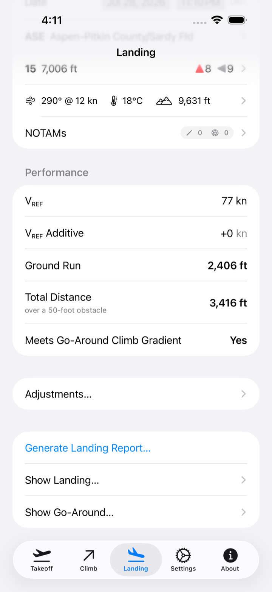
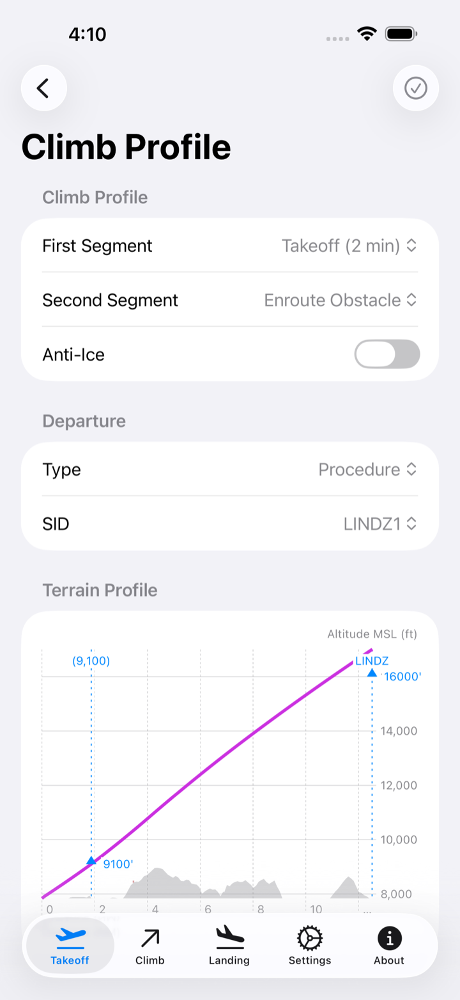
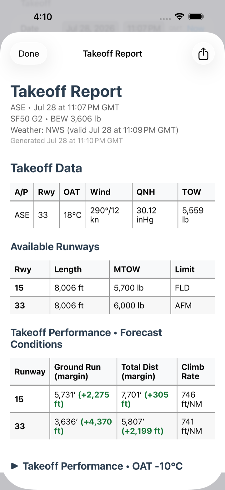
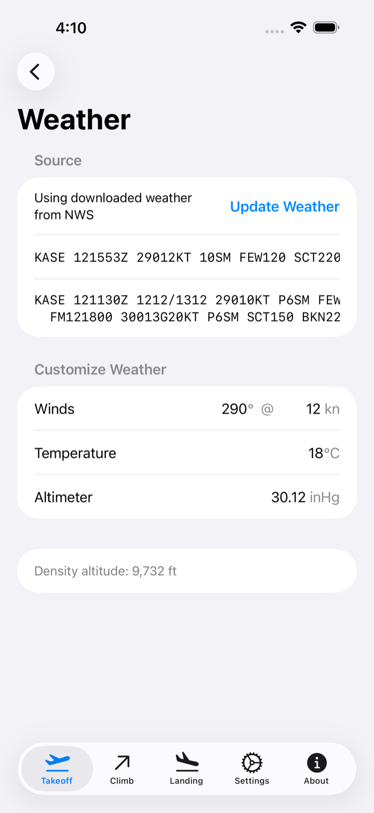

Know your numbers before you release the brakes.
Takeoff, climb, and landing performance for the Cirrus Vision Jet, computed straight from the AFM tables — for the runway you are actually sitting on, in the weather you are actually flying, over the terrain you actually have to clear.

Takeoff & Landing
Every number the AFM gives you.
Ground run, distance over a 50-foot obstacle, V-speeds, and VX climb gradient for takeoff. Landing distance, ground run, VREF, and go-around gradient at flaps 50 or 100. Each one interpolated from the official tables for your airframe — G1, G2, or G2+ with the updated thrust schedule.
Every runway at the field gets analyzed, each with the maximum weight it will take today and the reason for it — the AFM, field length, an obstacle, or climb gradient. Exceed a published limit along the way, whether crosswind, tailwind, max takeoff or zero-fuel weight, or fuel capacity, and the app says so rather than quietly handing back a number.

Climb & Terrain
See what you have to clear.
This is the part most performance apps leave to you. SF50 TOLD builds a real climb profile from winds aloft, your weight, and the AFM climb tables, then flies it down the legs of your actual departure or missed approach — course to fix, heading to altitude, DME arcs — correcting for wind the whole way.
Along that path it samples SRTM terrain and the FAA obstacle file in a corridor around your track, and shows you where the ground rises toward you. Anti-ice on or off, VX or enroute obstacle speed — the profile changes with the schedule you would actually fly.

Scenarios & Reports
Ask what if, before it matters.
Ten degrees hotter. Five knots less headwind. A hundred pounds heavier. A wet runway instead of the dry one you were promised, or a dry one despite the NOTAM.
Build the scenarios your operation cares about once, and every Takeoff and Landing Report shows them beside the forecast conditions — so the margin you have is something you read, not something you estimate on the roll. Share the finished report as a PDF, or keep it with the rest of your paperwork.

Weather & NOTAMs
Real weather. Real runway condition.
METAR and TAF arrive automatically from the Aviation Weather Center, with Apple Weather filling the gaps at fields that do not report, and the app always tells you which source a number came from. Where no report exists — or where you have better information than the one that does — enter the conditions yourself and every number follows from what you entered.
Then the NOTAMs: water, slush, snow, or ice with depth, a displaced threshold, a closure, an obstacle. Charted distances assume a dry, level, unobstructed runway. Yours rarely is, and the corrections are applied for you.

Also aboard
And the details that add up.
-
Every Vision Jet
G1, G2, and G2+ performance models, including the updated thrust schedule.
-
Your ground run, on the runway
A satellite map draws the calculated roll onto the actual pavement, offset for a displaced threshold.
-
Your operation’s margins
Separate safety factors for dry and wet runways, plus a VREF additive, applied to every result automatically.
-
Home screen widget
Runway data for your selected airport, without launching the app.
-
Nearest airport, favorites, recents
Tens of thousands of fields from the FAA NASR cycle and OurAirports, sorted by where you are.
-
Works without a signal
Airports, terrain, and obstacles live on your device, so a ramp with no bars still gives you numbers.
-
Enroute climb too
Gradient, rate, and speed at altitude — normal or ice-contaminated, anti-ice on or off.
-
Open source
MIT licensed and developed in the open. Read the performance code that produces your numbers.
Requirements
- Aircraft
- Cirrus SF50 Vision Jet — G1, G2, G2+
- Devices
- iPhone and iPad
- System
- iOS 26 or later
- Price
- Free, MIT licensed